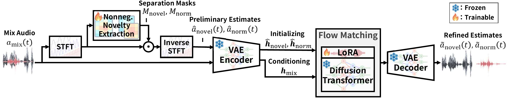

Separate
Nonnegative Novelty Extraction (NNE) estimates normal and novel components using a dictionary learned from normal recordings.
The University of Tokyo
The idea
A novelty score flags a departure from everyday sounds. NovelSep also produces an audio waveform that lets a listener inspect the evidence behind that score. A novel sound is new relative to an environment’s normal sound distribution; novelty does not necessarily indicate danger.
Nonnegative Novelty Extraction (NNE) estimates normal and novel components using a dictionary learned from normal recordings.
Flow matching in a pretrained audio latent space refines the initial estimates. Normal Region Exclusion selects surrogate novel audio for adaptation.
The energy of the refined novel component provides a novelty score. The same component can be played back as a listenable explanation.

Listening room
Compare four methods on five novel-containing mixtures and five normal-only recordings. All method outputs below are estimates of the novel component.
Start with the mixture and references. Then compare the estimated novel sounds. Successful separation preserves the novel event and suppresses the normal background. A normal-only example should produce a quiet novel estimate.
CLAP is audio embedding cosine similarity to the novel reference; SAJ is the automated SAM Audio Judge overall score. Higher is better for both. Scores are undefined for silent normal-only novel references and are shown as N/A.
Loading listening examples…
Consistent playback. No track is normalized independently. A shared attenuation, when needed, keeps every track within an example below full scale and preserves relative amplitudes. Keep the player volume unchanged when comparing methods.
Spectrogram levels are relative to the maximum magnitude across all reference and estimated tracks in the selected example. Detection labels are the saved predictions from each method’s tuning-selected threshold.
Novel examples cover siren, glass break, gun shot, baby cry, and screaming once each. Within each class, the selected example maximizes the positive CLAP difference between NovelSep and SAM-Audio w/ Fine-Tuning among examples with NovelSep CLAP of at least 0.60.
Normal examples include two airport recordings, two metro station recordings, and one public square recording, with distinct recordings and different cities within each scene. Among correct NovelSep normal decisions, examples favor a low NovelSep-to-fine-tuned-SAM-Audio residual energy ratio to illustrate suppression.
These deliberately selected qualitative examples are not a random sample or an aggregate evaluation. All scores come from saved evaluation outputs. Download the selection and provenance manifest.
Use NovelSep
The release provides reusable NovelSep and Normal Region Exclusion classes, scene-specific model weights, and reproducible demo selection.
Original source code is available for noncommercial research only. See the LICENSE.